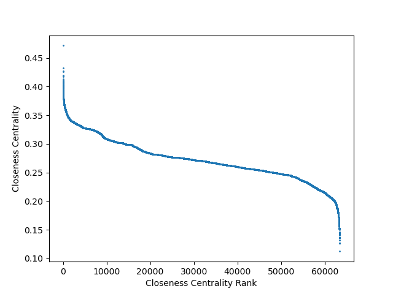
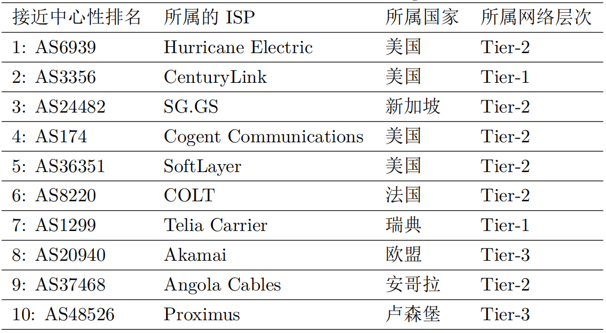

AS拓扑节点接近中心性
接近中心性衡量的是一个节点到其他所有节点的接近程度，如果一个节点到其他所有节点的距离之和很小，那么这个节点的接近中心性就很大。接近中心性是节点到其他所有节点的最短路径的距离的平均值的倒数。节点`v_(i)`的接近中心性`C_(c)(v_(i))`可以通过以下的公式得到：

其中`d(v_(i),v_(j))`代表节点`v_(i)`到节点`v_(j)`的距离


上图展示2019年1月AS拓扑各节点的接近中心性及其CDF分布，绝大多数的节点的接近中心性都在一个稳定的区间，约有95.5%的节点的接近中心性在0.20到0.345之间。

上表展示了接近中心性的AS排名中前十的AS，在接近中心性最高的前100个AS中，覆盖了50%的Tier-1的AS，在接近中心性最高的前100个AS中，有29个属于美国、6个属于俄罗斯、5个属于英国、5个属于意大利、5个属于法国、4个属于中国、3个属于澳大利亚、3个属于德国、1个属于日本。